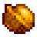

Golden Walnut
| Golden Walnut | |
 |
|
| To the parrots of Ginger Island, this nut is the finest delicacy. | |
| Information | |
| Source | Farming • Mining • Foraging • Combat • Fishing • Digging • Breaking Golden Coconuts |
| Location | Ginger Island • Blacksmith |
- "Parrots" redirects here. For the parrot found in Pelican Town, see Emily's 4-heart event.
Golden Walnuts are the currency of the parrots on Ginger Island. The number of Golden Walnuts that a player has saved is displayed directly underneath the Player's name in the Skills Tab. Walnuts are shared amongst players in Multiplayer.
The player can find a total of 130 Golden Walnuts scattered on the island by exploration, killing monsters, farming, fishing, mining, breaking crates in the Volcano Dungeon, etc.
After finding 100 Golden Walnuts:
- Qi's Walnut Room is unlocked.
- Players may purchase the Queen Of Sauce Cookbook from the Bookseller.
- The Raccoon may reward the player with a random unshipped item other than Roe and Artisan Goods starting with their sixth request.
Parrot Hints
Interacting with the parrot in Leo's hut will cause it to squawk hints for more walnut locations. Hints update as the player progresses—quantities change to reflect only unfound walnuts, and hints to walnuts that have already been found no longer appear.
- Fire mountain... Hidden down fire river...
- Buried near bones...
- Help man in tent...
- [Quantity] buried in the north...
- [Quantity] buried in the west...
- [Quantity] buried in the south...
- [Quantity] hidden in the north...
- [Quantity] hidden in the west...
- Bulging very close by...
- Stripey slimes to the west...
- [Quantity] stuck in shelly stones by shore...
- [Quantity] grow on the farm to the west...
- [Quantity] deep in the water...
- [Quantity] hidden in fire mountain treasures...
- [Quantity] encased in fire mountain gadgets...
- [Quantity] nutty stone in fire mountain...
- [Quantity] taken by monsters in fire mountain...
- Hidden in the pages of the journal...
- [Quantity] buried... Pirate's cove...
- Bathing in the heart of the star...
- Atop fire mountain...
- Kribbit... Gurrrp...
- Hidden shrine in rain forest...
- Inside hard, gold thing...
Walnut Locations
| All locations |
|---|
| General (All) | |||
|---|---|---|---|
| Quantity | Type of Discovery | How to Find | Image |
| 1 | Golden Coconut | Golden Coconuts, which are found anywhere on Ginger Island, can be brought to the Blacksmith back in Stardew Valley to be opened. The first coconut that Clint opens produces a Golden Walnut. | |
| 5 | Fishing | A maximum of five Golden Walnuts can be obtained by fishing anywhere on Ginger Island. Until five have been collected in this manner, each cast anywhere on the island gives a 15% chance to obtain a walnut.[1] | |
| Island East | |||
|---|---|---|---|
| Quantity | Type of Discovery | How to Find | Image |
| 1 | Exploration | A walnut in a bush is found in the jungle on the path towards Leo's hut. | |
| 3 | Puzzle | Place a Banana on the altar by the staircase to Leo's hut. A gorilla appears and rewards the player with 3 walnuts. | |
| 1 | Puzzle | Hit the tree inside Leo's hut with an axe. | |
| 1 | Exploration | From the foot of the stairs to Leo's hut, follow the path eastward along a hidden passage to the Gem Bird Shrine. There is a walnut to the south of the shrine. | |
| 5 | Puzzle | Complete the Gem Birds puzzle to receive 5 walnuts. Image shows a final gem being placed on the pedestals. | |
| Island West | |||
|---|---|---|---|
| Quantity | Type of Discovery | How to Find | Image |
| 5 | Harvesting | Each crop harvested on the Ginger Island farm, either by hand or with an Iridium Scythe, have a 5% chance of yielding a Golden Walnut, up to a total of 5. Only crops that do not regrow and do not require a Scythe to harvest will give Golden Walnuts.[2] | |
| 15 | Puzzle | After the farmhouse is repaired, the player may talk to the Gourmand Frog. The frog then asks the player to grow a Melon, a Wheat, and a Garlic, in that order. When a crop is mature, leave it unharvested and talk to the frog again to show him the crop. The reward is 5 golden walnuts per crop. Harvest each crop after receiving its reward. The three crops yield a total of 15 walnuts. Note: All three crops may be planted at any time, together or separately, but they must be presented to the frog in order one at a time and each crop can be harvested only after the frog has seen it and rewarded the player. |
|
| 1 | Journal Scrap #6 | Go south from the farm to the southeast corner of the beach where there is a curved palm tree on the eastern cliff. Dig in the corner tile where the eastern cliff meets the northern cliff adjacent to it. (Digging will produce nothing if the journal scrap has not yet been read.) | |
| 5 | Mining | Mining the Mussel Nodes has a 10% chance of yielding a walnut, up to a total of 5.[3] | |
| 1 | Exploration | Locate the shipwreck at the southwest side of the beach south of the farm. Find the hidden path at the wreck's west corner and follow it into the ship. There is a walnut on a plant inside. | |
| 1 | Puzzle | Locate the mole at the southeast side of the beach south of Birdie's hut. Lock it into a single hole by covering the other three holes with placeable objects. Then "whack the mole" by hitting it with the Axe, Pickaxe, or Watering Can to receive a golden walnut. The placeable objects can then be removed. Alternatively, an upgraded Watering Can can be used to whack the mole without covering the other holes. | |
| 1 | Exploration | Find the blue starfish triangle as depicted in the image on the beach south of the farm. Dig up the center. | |
| 1 | Exploration | Find the starfish diamond as depicted in the image near the tide pools. It may be partially covered by a large rock. Dig up the center. | |
| 1 | Exploration | Find the X marked in the sand in the tide pools. Dig up the center. | |
| 1 | Exploration | Find a diamond of indents in the sand to the bottom-left of the tide pools, near the ocean. Dig up the center. | |
| 1 | Exploration | A walnut is found behind a coconut tree by the pond west of the farm. | |
| 5 | Quest | Complete The Pirate's Wife Quest to receive 5 walnuts as part of the reward. | |
| 1 | Journal Scrap #4 | Dig in the sand north of Birdie's Hut to find a Quality Bobber and 1 Golden Walnut. (Digging will produce nothing if the journal scrap has not yet been read.) | |
| 1 | Exploration | Walk up the western coast towards Qi's Walnut Room to find a walnut bush to the bottom-right near a cliff. | |
| 1 | Exploration | Walk up past Qi's Walnut Room through the ocean water to find a walnut bush. | |
| 1 | Fighting | Killing the slimes in the Tiger Slime Grove can yield up to one walnut. | |
| 1 | Exploration | A walnut is found behind a mahogany tree in the Tiger Slime Grove. | |
| 1 | Exploration | Find a circle of grass in the Tiger Slime Grove, likely hidden behind a Mahogany Tree. Dig up the center. | |
| 1 | Exploration | From the farm's Parrot Express station, proceed west over the bridge across the river and find a walnut bush partially hidden by the southern wall. | |
| 3 | Puzzle | Complete the Simon Says puzzle in the cave north of Tiger Slime Grove to receive 3 walnuts. Image shows directions from the farm's Parrot Express station. | |
| 1 | Exploration | Go east from the Tiger Slime Grove and follow the cliff edge, destroying any rocks or weeds along the way. At the end of the path is a walnut bush. | |
| 1 | Exploration | Dig the center of the diamond-shaped pebbles to the east of the farm's Parrot Express station. | |
| 1 | Exploration | East of the farm's Parrot Express station, follow the hidden path that jogs eastward and northward. At its ultimate extent is a walnut bush. | |
| 1 | Exploration | South of the farm's Parrot Express station, go south along the cliff and bend eastward overlooking the farmhouse, to the walnut bush. | |
| Island North | |||
|---|---|---|---|
| Quantity | Type of Discovery | How to Find | Image |
| 1 | Exploration | Atop the stairs at the Island North entrance, turn west and dig at the center of stone circle. | |
| 1 | Exploration | Atop the stairs at the Island North entrance, turn west into the hidden passage to reach a grove with a walnut bush. | |
| 1 | Exploration | Atop the stairs at the Island North entrance, move northeast to the grassy area and dig at the center of a circle of flowers. | |
| 1 | Exploration | Atop the stairs at the Island North entrance, go northeast to the circle of flowers in the grassy area, then turn east and move onward to another grassy area. Dig at the center of the circle of stones. | |
| 1 | Exploration | Southeast of the Island Field Office, find the patch of sand with unusual texture and dig for the buried golden walnut. | |
| 1 | Exploration | Up the north steps of the dig site, dig at the center of the stone circle. | |
| 1 | Exploration | Up the north steps of the dig site and west across the bridge, there is a walnut plant. | |
| 2 | Exploration | Up the north steps of the dig site and east through the hidden passage in the cliff, the path emerges to a bridge eastward and two walnut plants beyond it. | |
| 6 | Island Field Office | Complete the Large Animal collection at the Island Field Office. | |
| 3 | Island Field Office | Complete the Snake collection at the Island Field Office. | |
| 1 | Island Field Office | Donate a Mummified Frog to the Island Field Office. | |
| 1 | Island Field Office | Donate a Mummified Bat to the Island Field Office. | |
| 1 | Island Field Office | Finish Purple Flowers Island Survey to get 1 walnut. The correct number is 22. | |
| 1 | Island Field Office | Finish Purple Starfish Island Survey to get 1 walnut. The correct number is 18. | |
| 1 | Exploration | Southeast of the Volcano Dungeon's entrance, find the walnut plant hidden by a tree. | |
| 1 | Exploration | Eastward from the Volcano Dungeon entrance, dig in the sand circled by two bushes and an arc of stones. | |
| 1 | Exploration | Northeast of the Volcano Dungeon entrance, there is a curved tree protruding high from the side of the Volcano. The walnut hidden in that tree can be knocked down using a slingshot. | |
| 1 | Journal Scrap #10 | Southwest of the Volcano Dungeon's entrance is a curved palm tree growing out of the cliff's side. Dig the tile that is visible just inside the loop of the palm tree. (Digging will produce nothing if the journal scrap has not yet been read.) | |
| 1 | Exploration | Dig at the center of the circle of stones at the extreme northwest of the map, a location where Leo sometimes stands. | |
| 1 | Exploration | At the extreme northwest of the map, west of the volcano, proceed west along the wall and a notch north through the hidden passage westward. There is a walnut in the secluded bush. | |
| 2 | Exploration | When at the river of lava at the entrance of the Volcano Dungeon, use a Watering Can to make a long path westward. Extend the path southward to the landing near the river's end. Exit the volcano south into an open area with two bushes. | |
| 17 | Mining | While in the Volcano Dungeon, up to 17 golden walnuts can be found through various methods.
|
|
| 2 | Volcano Dungeon | Reach the Forge. There is a walnut plant both at the forge's entrance and at its exit. | |
| Island South | |||
|---|---|---|---|
| Quantity | Type of Discovery | How to Find | Image |
| 1 | Exploration | Go up the stairs to Island North, immediately turn east, then go south through a hidden route behind a tree to access the walnut bush visible on the upper cliff in Island South. Note that the Parrot Hint considers this walnut as being hidden in Island North. | |
| 1 | Fishing | Go to the Island Southeast, accessible after the beach resort is built. The first time the player fishes in the starfish-shaped tide pool will yield a golden walnut.[4] | |
| 1 | Exploration | Go to the Island Southeast, which is accessible after the beach resort is built. Find a diamond of yellow starfish and dig up the center. | |
| 5 | Puzzle | On a rainy day, go to the Island Southeast, which is accessible after the Beach Resort is built. There will be a mermaid on a rock and a set of five rocks on the beach. Place a Flute Block under each set of stones on the shore, then tune them based on the number of stones above them. A large stone symbolizes 5, while a small stone symbolizes 1 (solution here). Once the blocks have been tuned correctly, run past them from left to right. | |
| 3 | Puzzle | On a non-rainy night after 8 PM on an even day, go to the Pirate Cove, which is accessible after the beach resort is built. Winning a round of darts will yield a prize of a walnut up to 3 times. | |
| 1 | Exploration | Go to the Pirate Cove, which is accessible after the beach resort is built. Dig up the patch of exposed sand among the barrels east of the water. | |
Redeem Rewards
Walnuts can be traded with parrots for various rewards.
116 walnuts are needed to unlock all of the rewards, allowing for the 14 extra walnuts to be exchanged for 28 Qi Gems.
| Reward | Description | Location | Cost |
|---|---|---|---|
| Ginger Island North | Unlock access to the north side of the island. | Leo's house | 1 |
| Ginger Island West | Unlock access to the west side of the island. | Ginger Island South | 10 |
| Ginger Island Farmhouse | Unlock the Farmhouse on the west side of the island, which can be used to sleep in to pass the day without leaving the island. | Ginger Island West | 20 |
| Farmhouse Mailbox | Allow players to access their mail without leaving the island. | Ginger Island Farmhouse | 5 |
| Farm Obelisk | Allow players to teleport back to the farm, similar to a warp totem. | Ginger Island Farmhouse | 20 |
| Island Dig Site | Repair the bridge to access the island dig site. | Ginger Island North | 10 |
| Island Trader | Unlock the Island Trader shop. | Ginger Island North | 10 |
| Volcano Bridge | Unlock a permanent bridge into the volcano so that players no longer have to have their watering can to get in. | Volcano Dungeon entrance | 5 |
| Volcano Exit Shortcut | Unlock an escape shortcut from level 5 of the Volcano Dungeon, allowing quick access to Island North. | Volcano Dungeon level 5 | 5 |
| Island Resort | Unlock a beach resort. NPCs from the town will occasionally come to visit the resort. This also unlocks Island Southeast and the Pirate Cove. | Ginger Island South | 20 |
| Parrot Express | Unlock a fast travel system to quickly get around the island. | Ginger Island | 10 |
| Exchange remaining Walnuts for Qi Gems.
Only available after buying all other upgrades. |
Qi's Walnut Room | 1 |
Golden Joja Parrot
The Golden Joja Parrot can be paid gold to find all remaining Golden Walnuts the player has not found. It is located to the west of the volcano. It costs  10,000g per unfound nut. The player is warned that doing this will prevent the player from having the true Ginger Island Experience.
10,000g per unfound nut. The player is warned that doing this will prevent the player from having the true Ginger Island Experience.
All remaining walnuts will be added after the player goes to sleep for the night.
Notes
- The parrot in Leo's hut provides hints for 123 out of 130 walnut locations with the exception of:
- 1 on the southern bush in the Gem Birds shrine area
- 3 for placing a banana on the altar in the east, by the staircase to Leo's hut
- up to 3 rewarded for winning the Darts Game.
- If all of the walnuts associated with a hint are found on the same day that the hint was given, the parrot will remain silent for the rest of the day and will not give another hint until the next day.
- When calculating Golden Walnuts needed to enter Qi's Walnut Room, the first Golden Walnut found is not counted, meaning the player must actually find 101 Golden Walnuts in total before unlocking the room.
Bugs
- Occasionally, the game may miscount the number of Golden Walnuts obtained, leaving the count at 129/130, when all walnuts have actually been found. The workaround is to open a chat window (with
?orTon PC) and enter /recountnuts. - If the player has purchased all upgrades on Ginger Island for 116 Golden Walnuts, and has traded the rest for Qi Gems, they can use the chat window command /recountnuts to receive Golden Walnuts in the amount above 116 that they had earned before trading nuts for gems. This can be done infinitely, by trading all nuts for gems and then using the chat command.
- Occasionally, the golden walnut north of the entrance to Qi’s Walnut Room may fly off screen when shaken (like a Garbage Can lid exploding, but without the sound) and not be counted as collected, making Perfection impossible. The only workaround is to ask the Golden Joja Parrot to find the walnut.
References
- ↑ See IslandLocation::getFish in the game code.
- ↑ See TerrainFeatures.HoeDirt::performUseAction in the game code. The Scythe is assigned harvesting method "1" and harvesting by hand is harvesting method "0".
- ↑ See GameLocation::breakStone in the game code. The mussel node is case 25.
- ↑ See IslandSouthEast::getFish in the game code.